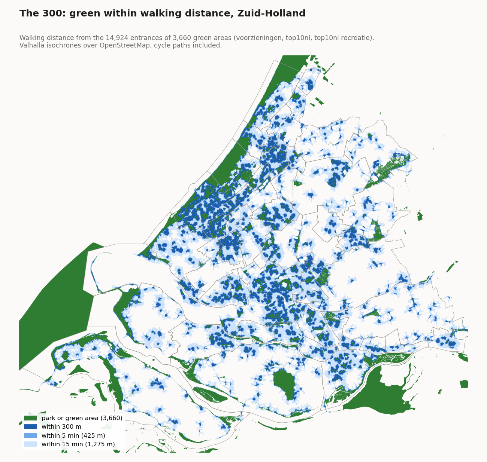
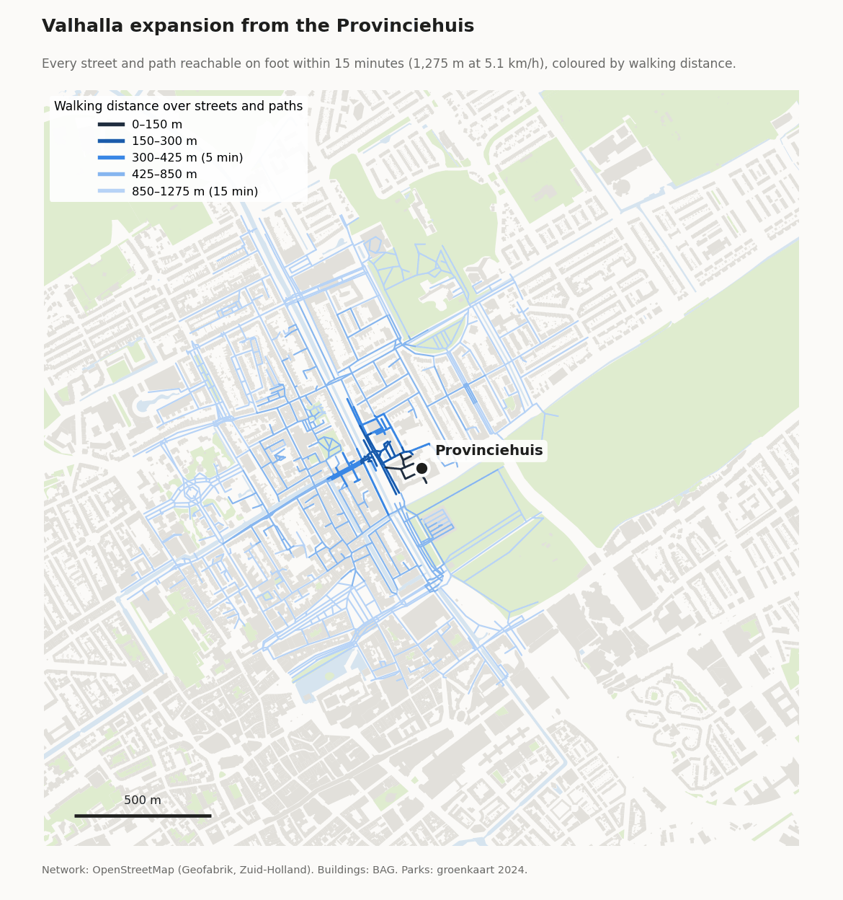
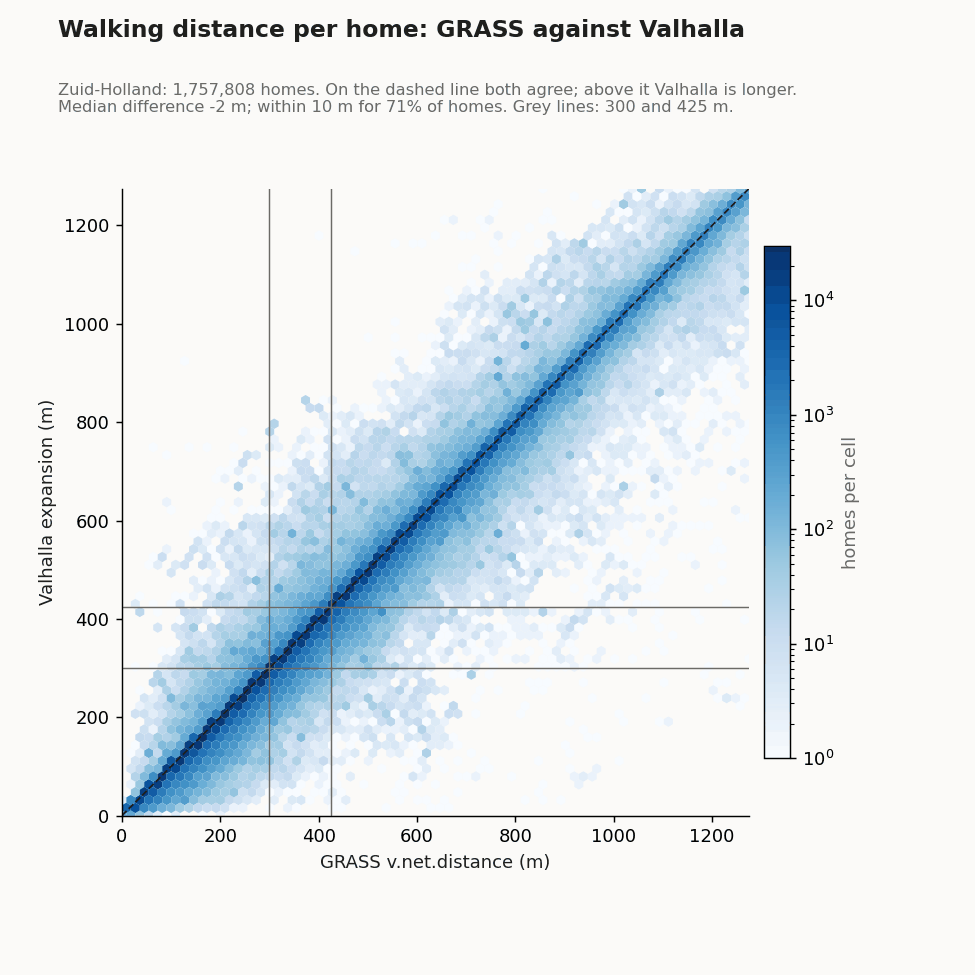
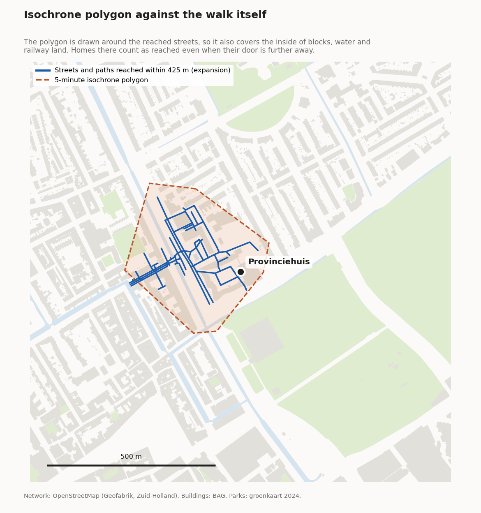
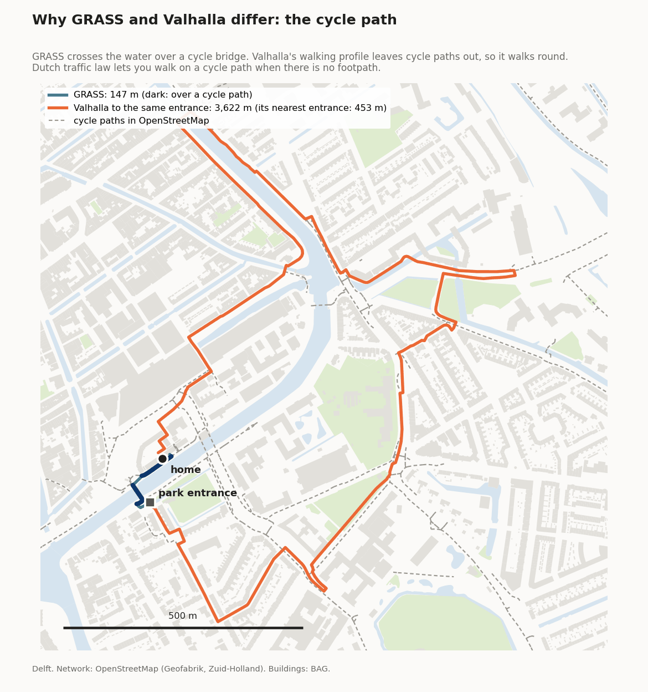

De 300: een park binnen 300 meter
Woont iedereen op loopafstand van een park? Voor elke woning is de loopafstand over straten en paden berekend tot de dichtstbijzijnde ingang van een park of ander openbaar groen. Een woning binnen 5 minuten lopen voldoet (groen op de kaart).
Zuid-Holland, 1.797.970 woningen. Per gemeente van 20,3% (Voorne aan Zee) tot 86,7% (Oegstgeest) binnen 5 minuten.
De hele berekening is gemaakt met QGIS en de onderdelen die QGIS meelevert: GDAL voor de gegevens, de ingangen en het wandelnetwerk, GRASS GIS voor de loopafstanden, en de Python van QGIS voor de stappen ertussen. Er is geen andere software nodig. Iedereen met QGIS kan het herhalen.
Wat wordt er gemeten?
Het artikel vraagt een grote openbare groenvoorziening binnen 300 m van elke woning, "ongeveer 5 minuten lopen". Wij meten de loopafstand over het netwerk van straten en paden, van de woning tot een ingang van het groen. Elke woning krijgt een afstand in meters; 300 m, 5 minuten en 15 minuten zijn grenzen op diezelfde uitkomst.
Wat de uitkomst aanneemt
Het artikel laat open wat groen is en hoe je meet. De keuzes hieronder maken het meeste verschil voor de cijfers. Achter elke keuze staat de kant waarop ze de uitkomst duwt.
- Een klein park telt mee. Groen telt vanaf 300 m²; de WHO-norm achter de regel is 1 ha. (gunstiger)
- Alleen parken, natuur, recreatiegebieden, landgoederen, begraafplaatsen en volkstuinen. Bosjes, bermen, sportvelden en golfbanen tellen niet. (strenger)
- Lopen tot een ingang. Een ingang ligt waar een pad of straat het groen in gaat. Groen zonder pad erin en zonder straat ernaast telt niet. (strenger)
- Fietspaden tellen als looproute, want volgens de verkeersregels mag je daar lopen als er geen voetpad is. (gunstiger)
- De dichtstbijzijnde woning telt voor het hele pand op de kaart. De cijfers per gebied tellen wel elke woning apart.
- Openbare toegang is niet gecontroleerd, behalve dat eendenkooien en paden met
access=privateniet meetellen. Begraafplaatsen gaan 's avonds dicht, en sommige volkstuinen zijn afgesloten. (gunstiger)
Stappen
- Groen verzamelen. Uit de provinciale voorzieningenkaart de parken (OpenStreetMap en TOP10NL, peildatum 17 september 2025). Uit TOP10NL de functionele gebieden park, recreatiegebied, natuurgebied, nationaal park, landgoed, heemtuin, botanische tuin, begraafplaats en volkstuinen.
- Water eruit knippen. Natuurgebieden als het Haringvliet en de Biesbosch bestaan grotendeels uit open water. Zonder deze stap zou elk pad langs zo'n oever een parkingang zijn. Het water van de CBS-wijkenkaart en van OpenStreetMap gaat eruit: 103.076 ha.
- Te klein en te smal weglaten, en samenvoegen. Stukken kleiner dan 300 m² en stroken smaller dan ongeveer 6 m vallen af. Wat overlapt of elkaar raakt wordt één groengebied: 3.660 in totaal. Dit groen staat op de kaart; klik erop voor de soort, de bron en het oppervlak.
- Ingangen bepalen. Waar een pad of straat uit OpenStreetMap de rand van het groen kruist, en waar OpenStreetMap een hek of ingang op de rand heeft. Groen zonder pad erin krijgt een ingang langs de rand waar een straat binnen 10 m loopt. Samen 14.924 ingangen.
- Loopafstanden berekenen.
GRASS GIS (
v.net.distance, met QGIS meegeleverd) berekent in één keer vanaf alle ingangen de kortste loopafstand tot elk kruispunt van het wandelnetwerk. Het netwerk komt uit OpenStreetMap: voetpaden, fietspaden, straten en wegen, zonder snelwegen en privéwegen. - Woningen koppelen. Elke woning (BAG-adres met woonfunctie, dezelfde als bij de 3) neemt het dichtstbijzijnde punt op het netwerk. Haar loopafstand is de afstand van dat punt tot de ingang, plus het stukje van de woning naar de straat.
- Per gemeente, wijk en buurt. Het aandeel woningen binnen 300 m, 5 en 15 minuten, op dezelfde gebieden als de 3 en de 30.

Keuzes en waarom
| Keuze | Waarom | Alternatief dat we niet kozen |
|---|---|---|
| Loopafstand over het netwerk | 300 m hemelsbreed kan in werkelijkheid een lange omweg zijn, door water, spoor of een snelweg zonder oversteek. Het artikel spreekt zelf van "ongeveer 5 minuten lopen". | Een cirkel van 300 m: eenvoudiger, maar negeert barrières. |
| Een afstand per woning | Elke woning krijgt meters, dus 300 m, 5 minuten en 15 minuten zijn filters op één uitkomst. | Zones (isochronen) rond de ingangen. Zo'n zone dekt ook de binnenkant van bouwblokken en water; zie de vergelijking. |
| Kleur op 5 minuten | 5 minuten (425 m bij 5,1 km/u) komt met de gebruikelijke omweg van straten neer op ongeveer 300 m hemelsbreed. De 300 m langs de straat staat in de pop-ups. | Kleuren op 300 m langs de straat: strenger dan de 300 m hemelsbreed van de WHO. |
| Vanaf de ingangen | Je gaat een park in via een pad. Rekenen vanaf de rand zou ook hekken, water en dichte bosranden als toegang tellen. | Afstand tot de rand van het groen. |
| Fietspaden lopen mee | Volgens de verkeersregels mag je op een fietspad lopen als er geen voetpad is. Waar een fietsbrug de enige oversteek is, scheelt dat honderden meters. | Alleen voetpaden en straten. |
| Minstens 300 m², niet te smal, zonder water | Plantsoentjes en bermstroken zijn geen plek om te recreëren, en open water is geen park. | De WHO-grens van 1 ha (zie open punten). |
| Alleen QGIS-onderdelen | GDAL en GRASS komen met QGIS mee. De berekening is daarmee voor iedereen te herhalen, zonder licenties of servers. | FME met een routeserver, zoals de eerdere berekening. |
Klopt dit voor mijn woning?
Per buurt, wijk en gemeente geeft de kaart een betrouwbaar beeld. Per woning is het een goede indicatie, maar geen meting ter plekke. In de pop-up staat de loopafstand in meters. Is jouw woning rood terwijl er een park vlakbij lijkt te liggen? Dan kan dat hierdoor komen:
- De route is langer dan hemelsbreed. Ligt er water, spoor of een drukke weg zonder oversteek tussen, dan kan een park dat dichtbij lijkt toch verder lopen zijn.
- De ingang ligt aan de andere kant. We rekenen tot een ingang waar een pad het groen in gaat, niet tot de rand.
- Het groen telt niet mee. Een sportveld, een bosje zonder parkstatus, een smalle groenstrook of een privétuin is geen park in deze berekening. Nieuw aangelegd groen kan nog ontbreken in de bronnen.
- Een pad ontbreekt in OpenStreetMap. Een doorsteek die niet op de kaart staat, kent de netwerkanalyse niet.
Gecontroleerd met een tweede programma
Ter controle is alles nog een keer berekend met Valhalla, een open-source routeplanner (niet uit QGIS, alleen voor deze controle). Valhalla kan vanaf een punt alle straten en paden teruggeven die je lopend bereikt: de expansion. Hieronder vanaf het Provinciehuis in Den Haag.

| Aandeel woningen binnen | GRASS (de kaart) | Valhalla | Valhalla, zones | FME (eerder) |
|---|---|---|---|---|
| 300 m | 36,7% | 38,0% | 46,4% | niet berekend |
| 5 minuten (425 m) | 56,0% | 57,0% | 64,0% | 79,1% |
| 15 minuten (1.275 m) | 97,8% | 98,0% | 98,2% | 99,2% |
GRASS en Valhalla zijn het voor 97,8% van de woningen eens of die binnen 300 m van groen wonen. Bij 71% van de woningen scheelt de afstand hoogstens 10 m, bij 93% hoogstens 50 m. Waar ze verschillen, rekent Valhalla vaker korter: het kan een woning ook over haar eigen privéweg bereiken.

Waarom geen zones. Een zone (isochroon) rond de bereikte straten dekt ook de binnenkant van bouwblokken, water en spoorterrein, waar de wandeling omheen gaat. Met zones ligt 46,4% van de woningen binnen 300 m, met de werkelijke loopafstand 38,0%.

Fietspaden. Het standaardprofiel van Valhalla laat voetgangers niet over fietspaden lopen. Voor deze controle zijn ze opengezet, zodat beide programma's over hetzelfde netwerk lopen.

De eerdere FME-berekening telde 79,1% van de woningen binnen 5 minuten. Per woning zijn GRASS en FME het voor 69% eens. Het verschil zit vooral in het groen: FME telde ook bosjes, struweel, tuinen, golfbanen en sportvelden mee, en werkte met zones.
Rekentijd
| Stap (hele provincie) | Tijd |
|---|---|
| Groen, water, ingangen, netwerk en woningen voorbereiden (GDAL) | 8 min |
| Loopafstand tot elk kruispunt (GRASS) | 18 min |
| 1,8 miljoen woningen koppelen | 4,6 min |
Op een werkstation met 6 kernen en 64 GB geheugen. Valhalla deed hetzelfde in 26 minuten.
Open punten
- 300 m² is veel kleiner dan de WHO-norm van 1 ha. Het artikel en de WHO bedoelen een grote openbare groenvoorziening. Een berekening met 1 ha is een filter op hetzelfde groen.
- Groen zonder ingang. 1.063 groengebieden in de provincie krijgen geen ingang, samen 1,7% van het groen: vooral natuureilandjes die na het wegknippen van het water overblijven, maar ook ongeveer 230 parken, volkstuinen en begraafplaatsen waar de dichtstbijzijnde straat net te ver ligt (issue #3).
- Openbaarheid is niet per terrein gecontroleerd.
Code en bronnen
| Stap | Waar |
|---|---|
| Groen, ingangen, loopafstanden (GDAL en GRASS uit QGIS) | indicator_300_park/ |
| Aandeel per gemeente/wijk/buurt, kaarttegels | web/build_tiles_30_300.py |
| Groen op de kaart | web/build_tiles_groen.py |
| Gegevens | Bron | Stand |
|---|---|---|
| Parken | Provinciale voorzieningenkaart (OpenStreetMap en TOP10NL) | 17 september 2025 |
| Overig groen | TOP10NL functioneel gebied (Kadaster) | 2025 |
| Water | CBS Wijk- en Buurtkaart 2025, OpenStreetMap | 2025–2026 |
| Paden en straten | OpenStreetMap, extract Zuid-Holland (Geofabrik) | 12 oktober 2026 |
| Woningen | BAG via PDOK, zelfde als de 3 | 27 september 2026 |